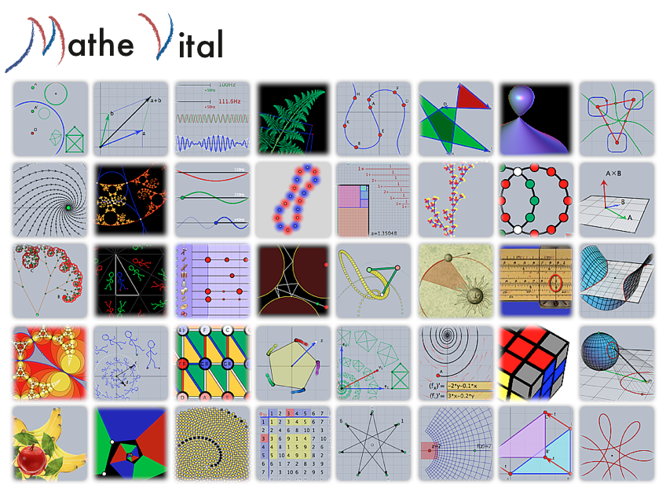

MatheVital
このマニュアルを読んで、あなたは数学や物理や関連することがらでシンデレラが強力な道具となることがわかったでしょう。さらに、数学や物理のみならず、音楽でもWebページ上にインタラクティブなコンテンツを作ることができることもわかったでしょう。もし、いろいろな応用例やシンデレラの可能性を知りたいと思うのでしたら、インターネットのポータルサイト www.mathe-vital.de
Mathe-Vital で、あなたはたくさんのコレクションを見ることができます。 Vital という言葉は、 Visual interactive tools for advanced learning の頭文字です。コレクションは大学での数学（線形代数や微分積分や幾何学）のような古典的な内容だけでなく、「数学と音楽の関係」、「数学と植物の成長の関係」、「フラクタル」などのポピュラーな題材にわたります。最近の３年間で、およそ500ものアプレット群に成長しました。これらのシンデレラのアプレットの多くがダウンロードできますので、これをもとに新しい作品を作ったり、コードを解析したりすることができます。
Mathe-Vital のコレクションは、コースとモジュール、アプレットに分類できます。
それぞれのコースは１２個ないし３０個のモジュールからなります。モジュールは２個ないし７個のアプレットを含みます。Each course has roughly 12 to 30 modules. Each module contains between 2 and 7 applets. 次の図にあげるモジュールアイコンのスクリーンショットの一覧はそれらの内容をも示しています。
 |
| Mathe-Vital コレクション |
Page last modified on Thursday 01 of September, 2011 [04:44:16 UTC].
The original document is available at
http://doc.cinderella.de/tiki-index.php?page=MatheVitalJ